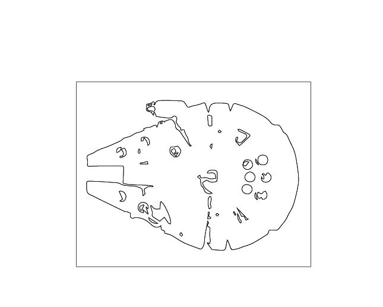
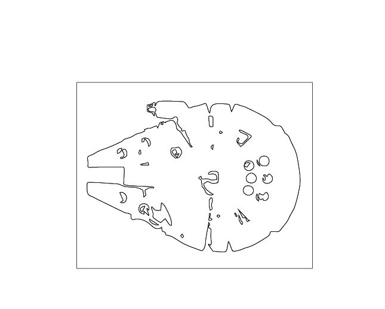
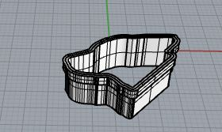

Assignment 1 - My First Rhino Model
For assignment 1, my goal was to create "cookie cutters" from images I found.
Below are the steps I took to create the 3d models
Step 1 - Find images
For step 1 I found images of a turtle, a dog, and the millenium falcon
Step 2 - Cleanup the images in Photoshop
With Step 2 I went through a process with each of the images
- Desaturate the image to just black and white
- Adjust the input levels of the image to make the outline stand out more cleanly
- Adjust the threshold levels as needed
- Add a blur filter
- Clean up the image as needed with a brush tool. You want a very clear distinction between the image and the background
Step 3 - Create the outline in Illustrator
- Copy the image from photoshop into illustrator
- Click object > image trace to create the vectors
- Select the stroke to be black
- Select the fill to be transparent
- use the group selection tool (cursor with a plus) to remove unneeded lines
- export the file as a DXF, changing the scale to ensure 1 inch is 1 unit
Step 4 - Create the 3D model in Rhino
- :Import: the DXF file into rhino, ensuring the model units and layout units are correct, and Convert regions to curves is checked
- If you do not see the outline you created on the grid zoom out and look for it.
- If you still do not see it, go to edit>block manager>properties and link the dxf file.
- :Insert: the block if needed
- :Explode: to get the curve
- :Offset: the curve so you have 2 curves, offset by.125 in minimum
- :ExtrudeCrv: ensuring that :Solid: is checked yes
- Repeat the steps above to add a lip if desired
- :BooleanUnion: to ensure the object is one surface.
- now :Export: the object as an STL
Below you can see some in progress picks of my 3D models!
1. 2.
3.
4.
5.
6.
7.
2.
3.
4.
5.
6.
7. 8.
8.
Below are the starting and ending results for each image
Turtle
Dog

Millenium Falcon
3D models full view